TechieRag — Product Guide
TechieRag-ProductGuide.md- Welcome
- Getting started
- Using TechieRag
- Ingest documents and folders
- Search your documents
- Ask a question and get an answer with sources
- Get a typed answer
- Choose or switch a language model
- Connect a repository, a mailbox or a website
- Keep separate workspaces and remember conversations
- Give the model tools and let it act
- Use the Microsoft Agent Framework with your documents
- Run a language model on the device, with no server
- Embed and search offline on phones and desktops
- Sign in with a ChatGPT subscription instead of an API key
- Watch usage and set a budget
- Try it on your own devices with the probe app
- Troubleshooting
| App | TechieRag |
| Size | Large |
| Date | 2026-09-25 |
Welcome#
TechieRag adds document search and question answering to your own .NET application. You point it at files, folders, raw text, a code repository, a mailbox or a website; it splits the content into passages, turns each passage into a vector, stores it, and finds the passages that best match a question. Add a language model and it writes an answer from those passages, names the sources it used, and counts the tokens spent.
Everything is chosen with a few builder calls or a settings section: which embedding model, which store (SQLite, PostgreSQL or Qdrant), which of six model providers, and whether any data leaves the machine at all. With the Embedded package the embedding model downloads once and then runs offline, so private documents stay private.
It is for .NET developers who want retrieval and answers inside their own app, on desktop and mobile, without rebuilding the plumbing every time.
Getting started#
- Add the packages to your project.
dotnet add package TechieRagbrings the core;dotnet add package TechieRag.Embeddedadds the offline embedding model. Optionally addTechieRag.Localfor a small language model that runs inside your app,TechieRag.Agentsfor agents built on the Microsoft Agent Framework, andTechieRag.Telemetryif you export traces and metrics. All of them come from nuget.org with no token and no feed change. - Build one instance. Either chain the builder,
new TechieRagBuilder().UseEmbedded().UseSqliteVec(), addUseOllamaLlm()orUseLlmForModel("gpt-4o")if you want written answers, and finish withBuild(); or register it through dependency injection withservices.AddTechieRag(configuration.GetSection("TechieRag"))and keep the embedding, store and model choices in aTechieRagsection of your app's settings. Ask forITechieRagwherever you need it.UseSqliteVec()with no argument creates a database file next to your app; nothing else to install. - Call
InitializeAsync()once at start-up. It creates the tables or collections in your store and makes sure the embedding model is ready. - What happens first: on the very first run the embedding model downloads once, about 2.3 GB on desktops and 91 MB on Android and iOS, where a smaller model is used. Subscribe to
ModelDownloadService.Instance.DownloadSizeKnownto learn the size before a single byte moves (setDeclinethere to stop it and tell the user), and toProgressChangedto drive a progress bar. Every later start makes no network call, and embedding runs fully offline. - Ingest one file with
IngestAsync, then ask withAskAsync. You are done with the setup.
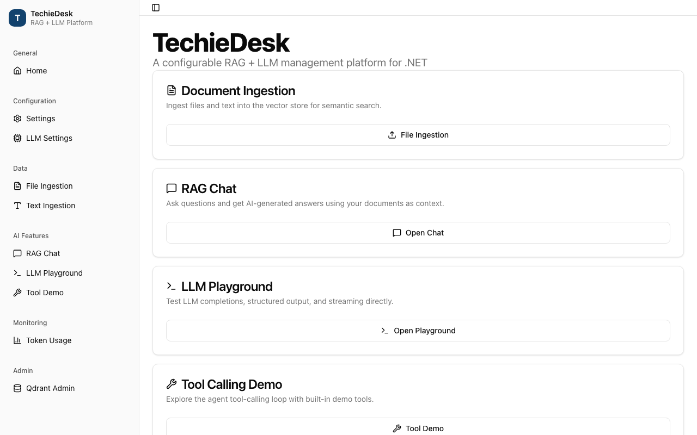
Using TechieRag#
Ingest documents and folders#
- Make sure
InitializeAsync()has run once for this instance. - Call
IngestAsyncwith the path of one file. The format is picked from the extension: PDF, Word, Markdown, HTML, JSON, TOML, plain text and about seventy code file types are read natively, and anything else falls back to a generic text reader. You get the new document's id back. For a PDF, every passage remembers its page number, so a later answer can point at the page it came from. - Call
IngestDirectoryAsyncwith a folder and a pattern such as*.mdor*.*. Every matching file is ingested and you receive the list of ids. - Call
IngestTextAsyncwith a piece of text, a name and, if you like, metadata such as author, team or date. No file is needed. The metadata is copied onto every passage of that document, so you can filter on it later and show it next to an answer. - Call
ListDocumentsAsyncto see what is stored: each document with its name, chunk count and metadata. CallGetStatsAsyncfor the totals: number of documents, number of passages, storage size and the time of the last ingestion.DeleteDocumentAsyncremoves one document;ClearAsyncempties the store.
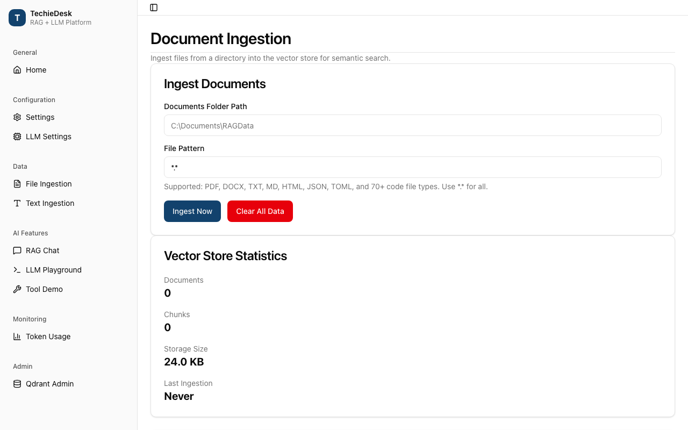
Tips: Passages are 500 characters long and overlap by 50 unless you change that with WithChunkSize(size, overlap); longer passages give the model more context per hit, shorter ones give sharper matches. A large PDF takes a while the first time because every passage is embedded, so run big folders in the background and watch the statistics. The SQLite store searches exactly and is comfortable up to a few hundred thousand passages; past that, switch to UsePgVector or UseQdrant and nothing else in your code changes.
Search your documents#
- Call
SearchAsync("your question", topK: 5). You get a list of results, best first. Each result carries aScorebetween 0 and 1 and aChunkwith the passage text, the document it came from and that document's metadata, including the page number for PDFs. - To look inside one document only, pass
documentFilter:with that document's id. Only passages of that document come back, still ranked by score. - To improve the order for hard questions, turn on reranking. At build time add
WithReranker(RerankSource.LocalOnnx); the reranker model comes with the Embedded package and downloads once like the embedding model. Then callSearchAsync("your question", new SearchOptions { Rerank = true }). The best twenty candidates are read again by a model that sees the question and the passage together, and the list is reordered by that reading.WithRerankEnabledByDefaultmakes it the default for every search. - Search needs no language model at all. With no model configured the library behaves as a pure retrieval engine and
GetLlmProvider()returns null, which is a perfectly good way to run it.
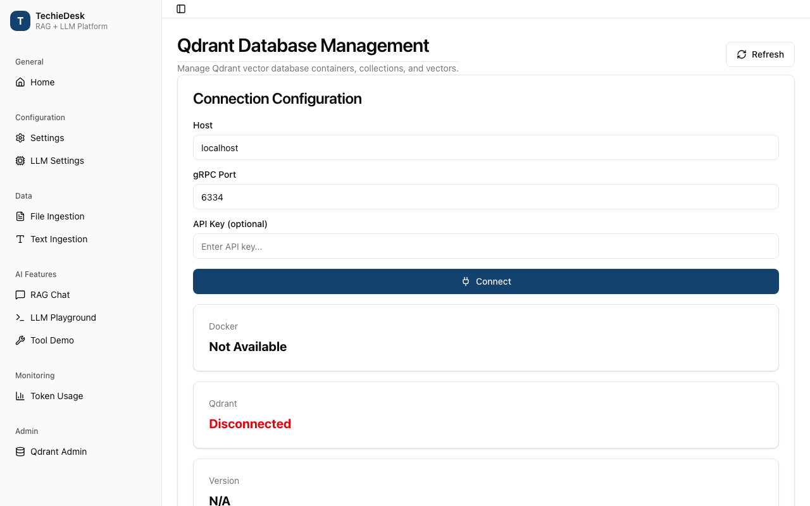
Tips: Scores compare results to each other within one search, not across searches, so pick a threshold by trying a few questions rather than by a fixed rule. Keep topK small; five to ten good passages beat fifty mediocre ones once a model has to read them. Reranking adds a moment per search, so use it where answer quality matters more than speed. If a search returns nothing useful, check ListDocumentsAsync first: an empty store is the most common cause.
Ask a question and get an answer with sources#
- Configure a model provider at build time (see "Choose or switch a language model" below).
- Call
AskAsync("What does the refund policy say?"). The library searches your documents, builds a prompt from the best passages and asks the model. You get backAnswer(the text),Sources(the passages it was given, with their scores and metadata) andUsage(input and output tokens plus the estimated cost). - To show text as it is written, loop over
AskStreamAsyncwithawait foreach. Each item is a piece of the answer; append it to the screen and the user sees the reply grow instead of waiting for the whole thing. - To show sources before the answer, loop over
AskStreamWithSourcesAsyncinstead. The first event carries the sources, then token events carry each piece of text, and a final Completed event carries the full answer and the usage. Your screen can list the sources while the model is still writing. - For a conversation, call
ChatWithRagAsync("your message", history)with the earlier messages. The reply uses both the retrieved passages and what was said before.ChatWithRagStreamAsyncstreams it. AddWithConversationMemory()at build time and the library keeps the history for you, trimming it to a token budget while keeping the system message and the most recent turns. - To change how the model is addressed, use
WithPromptTemplateto set the system prompt, the way passages are laid out and how much context is allowed.
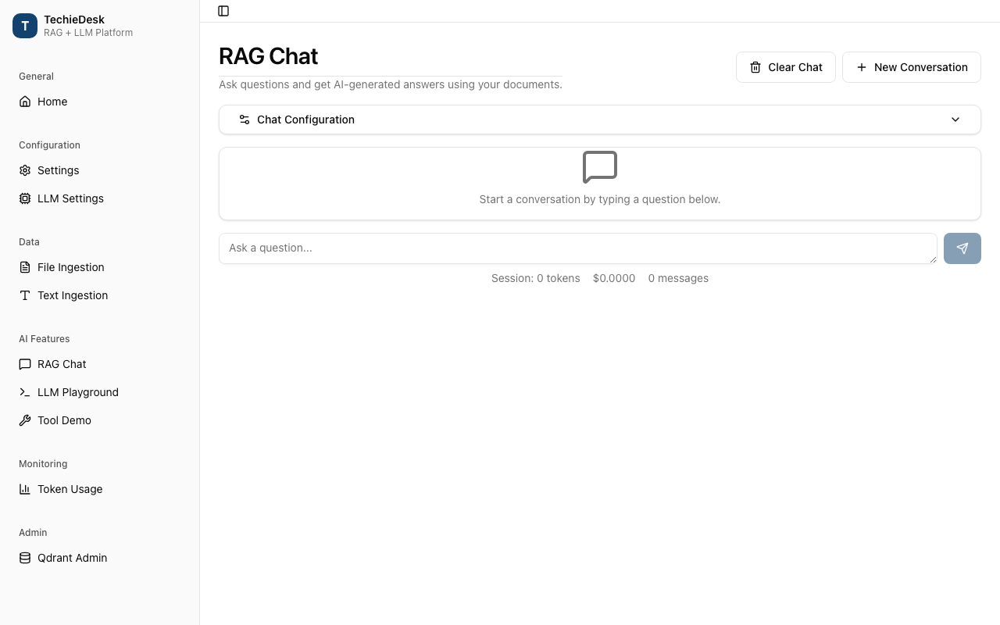
Tips: Show the sources every time; a page number next to an answer is what makes users trust it. Ask one thing per question; two questions in one message split the retrieval between them. If a question is outside your documents the model may still answer from general knowledge, so for a strict "only from my documents" behaviour use a workspace in query mode (last section), which returns an honest "not covered" reply instead.
Get a typed answer#
- Write a plain class with the properties you want back, for example a title, a one-line summary, a list of tags and a confidence number.
- Take the model with
rag.GetLlmProvider()and callCompleteAsync<YourClass>("Return JSON with fields title, summary, tags and confidence for this text: …"). The library asks the model for JSON and turns it into an instance of your class. What you get back is your object, ready to use, not a string to parse. - To extract facts from your own documents, run
SearchAsyncfirst and put the returned passages into the prompt text, then ask for the fields you need. This turns a folder of contracts or tickets into rows you can store or display. - It works with every provider, including the in-app local model, as long as the model can write JSON.
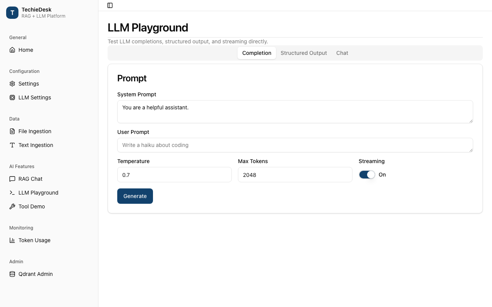
Tips: Name the fields in your prompt exactly as they are named in the class, and keep the types simple (strings, numbers, booleans, lists). Tell the model to return only JSON and nothing else. If the reply cannot be turned into your class you get an exception rather than a half-filled object, so catch it and retry with a clearer prompt or a lower temperature. Smaller local models manage short, flat objects well; deeply nested ones are safer on a larger model.
Choose or switch a language model#
- Pick one of six providers at build time:
UseOllamaLlm(endpoint, model)orUseLmStudioLlm(endpoint, model)for a server on your own machine;UseOpenAICompatibleLlm(endpoint, key, model)for OpenAI, vLLM, Groq, Together or LocalAI;UseAzureAIFoundryLlmfor an Azure deployment;UseGeminiLlm(key)for Google;UseAnthropicLlm(key)for Claude.UseCustomLlmProvideraccepts your own. - Or pick by model name alone:
UseLlmForModel("claude-sonnet-4-5")orUseLlmForModel("gpt-4o")looks the name up in the built-in catalogue and builds the right provider; hand it the key as the second argument or through an environment variable. - Run a model inside your app with
UseLocalLlm()from the Local package. Give itConfirmTermsAsyncso your app can show the model's licence before anything downloads; the download states its size first, resumes if the app is closed halfway, and is checked file by file. No endpoint, no key, and it works offline. Names such aslocal/qwen2.5-0.5b-instructroute to it onceLocalLlm.Register()has run. - Add a fallback with
WithFallbackLlm(f => f.Source = LlmSource.Ollama). When the primary provider fails after its retries, the same request is answered by the fallback and your code never notices. - Handle rate limits with
WithResilience. Transient failures are retried with growing delays; a "too many requests" reply that names a wait time is honoured exactly; after five failures in a row the provider is paused for a recovery window so your app fails fast instead of hanging. - Switch without a code change: alter the model settings in your configuration section and rebuild.
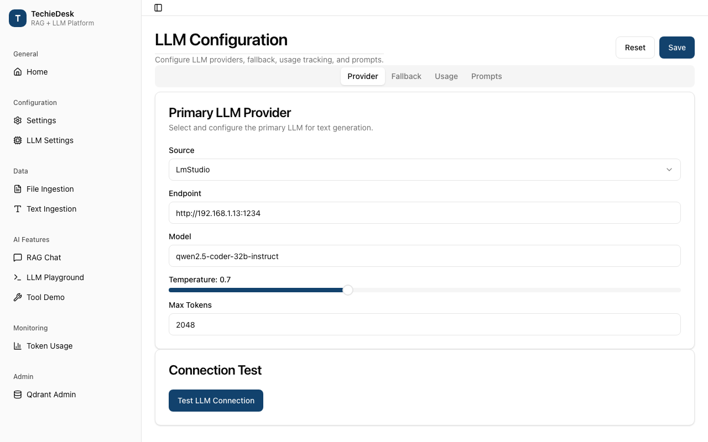
Tips: Start with Ollama or LM Studio on your own machine while you shape prompts; it costs nothing and nothing leaves the room. Then keep the local server as the fallback when you move to a hosted model. A ChatGPT subscription can be used through UseChatGptSubscriptionLlm with a device-code sign-in; other vendors' subscription terms do not allow it, and the catalogue records each vendor's terms and the date they were checked so you can show them before sign-in.
Connect a repository, a mailbox or a website#
- Repository: fill
RepositoryConnectorOptionswithHost(GitHub or GitLab),ProjectPathsuch as owner/project,Branch,IncludeGlobssuch as*.md, and anAccessTokenfor a private project. Build aRepositoryConnectorover anHttpConnectorTransportand hand it torag.IngestConnectorAsyncwithConnectorRunOptions. Back comes a result per file, a reason for each failure, and a sync state. - Mailbox: fill
EmailConnectorOptionswith the folders,SinceUtc, sender or subject filters and, if wanted,IncludeAttachmentsfor PDF, Word, Excel and PowerPoint attachments. Quoted replies and signatures are stripped by default. UseImapMailTransportwithImapMailboxOptions(host, port 993, user name, password or OAuth token; encryption is required) for a live mailbox, orMboxMailTransportfor an exported mbox file. Build anEmailConnectorand run it the same way. - Website:
IngestUrlAsync(url)fetches one page, cleans it to text and stores it.IngestSiteAsync(seedUrl, fetcher, new WebCrawlOptions { MaxDepth = 1 })follows links one step from the seed, stays on the same host, stops at 25 pages and pauses between requests. - What stops a run early:
ConnectorRunOptionscaps a run at 500 items, 200 listing pages, 2 MB per item and 64 MB in total. When a cap is hit the result hasReachedLimitset and aLimitCode(RunItemLimitReached,RunPageLimitReachedorRunByteBudgetReached). Everything fetched so far is already stored, because each item is ingested as it arrives, and the sync state is saved, so the next run skips unchanged items and carries on from there. A run that fails outright throwsConnectorExceptionwith anErrorCode; act on the code, never on the message text. - Private addresses are refused. Every outbound fetch, whether connector, page or crawl, refuses loopback, private-network and link-local targets, even after a redirect.
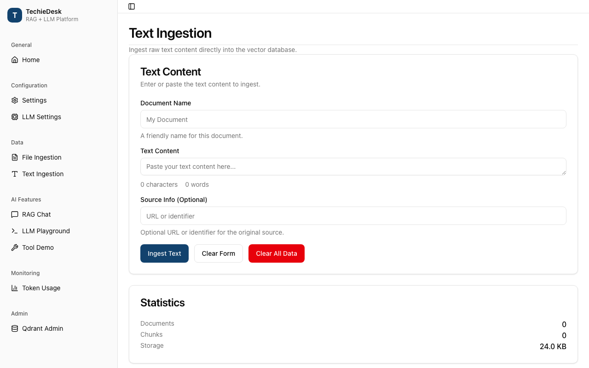
Tips: Start with a small MaxItems and a narrow glob or folder, then widen once the results look right. Keep tokens and passwords in your app's secret store, never in the options you commit. Raise RequestDelay for a server that is not yours. The mailbox connector has so far been exercised against mbox exports rather than a live IMAP server, so test your mailbox on a copy before pointing it at the real one.
Keep separate workspaces and remember conversations#
- Add
WithPersistence(StoreProvider.Sqlite, connectionString)(orStoreProvider.Postgres) at build time, together withWithConversationMemory()andWithUsageTracking(u => u.MaxCostUsd = 0.10m). Then takerag.GetWorkspaceManager(). - Call
CreateWorkspaceAsynconce per team, project or customer. Add content with the manager'sIngestFileAsyncorIngestTextAsync, naming the workspace, or attach a document that is already stored withAddExistingDocumentAsync. A document is embedded only once and shared by content hash, so the same manual in three workspaces costs one ingestion. A search or question in one workspace never sees another workspace's passages. - Tune each workspace on its own: a similarity threshold, a top-K, a reranking switch, and pinned documents through
SetPinnedAsync. Pinned passages stay in the prompt when space runs short; retrieved ones are dropped first. Choose query mode for an honest "that is not in my documents" reply, or chat mode for a freer conversation. - Ask through the manager's
AskAsyncwith the workspace, the question and a thread. Every message of the thread, yours, the model's and the sources it used, is saved per workspace and user. Close the app, open it again, load the thread, and the whole conversation is there; the model's context is rebuilt from that history with the most recent turns kept. - Watch the money:
GetTokenTracker().GetBudgetStatus()reports tokens and cost against your ceilings. SetMaxTotalTokens,MaxCostUsdand anAlertThreshold(80 percent by default);OnBudgetAlertfires when usage nears the ceiling, andBlockOnExceededrefuses the next call once it is passed.WithModelPricinggives a per-model breakdown.
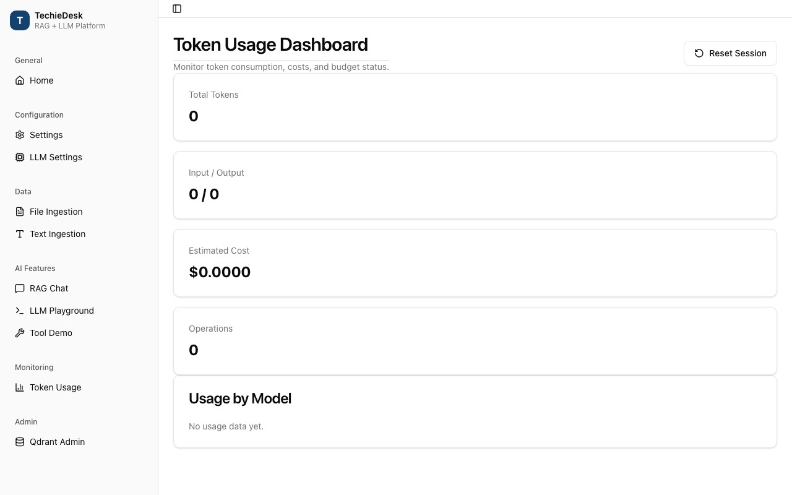
Tips: One workspace per customer is the simplest way to keep their documents apart. Pin the two or three documents every answer should respect, such as a policy or a glossary, and let retrieval fill the rest. Set a small cost budget while you develop; the alert tells you about a runaway loop long before the bill does. Reset the session counters when you want a fresh reading, and read the per-model breakdown before choosing which model to keep.
Give the model tools and let it act#
A tool is a small function you own that the model may call on its own initiative: look up the weather, run a calculation, search your documents. TechieRag passes the list to the model, runs whatever it asks for, and feeds the result back until there is a final answer.
- Create a
ToolRegistryand callRegister("get_weather", schema, args => ...), passing the tool name, a short JSON description of its arguments, and the function that does the work. - Take the model you configured (
rag.GetLlmProvider()) and createnew AgentLoopRunner(provider, registry). - Call
RunAsync("What is the weather in Pune?"). The model decides it needsget_weather, TechieRag runs your function, and you get back an answer that uses the result. - To watch it happen, call
RunStreamAsync(messages)and loop over the events: text as it is written, thenToolCallRequestedandToolExecuted(carrying your function's result), then the answer, thenCompletedwith the tokens used across the whole run. - To use a tool server that speaks MCP, call
builder.WithTools(t => t.AddMcpServer(...))with the command that starts the server. Its tools appear next to your own and run in the same loop.
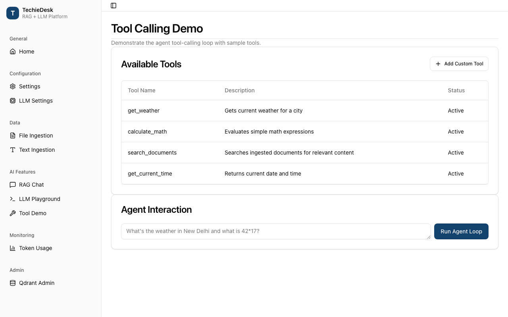
Tips. Pick a model that supports tool calling; one that does not will answer in prose and never call anything. Keep tool names short and descriptions honest, because the model chooses from the description alone.
Use the Microsoft Agent Framework with your documents#
The TechieRag.Agents package builds a ready-made agent on Microsoft's Agent Framework that knows how to search your documents, decide whether the results are strong enough, and cite what it used.
- Add the
TechieRag.Agentspackage and ingest at least one document containing a fact you can ask about. - Create
new TechieRagAgentBuilder(rag), pointing it at your TechieRag instance. Choose the model withUseLmStudio("http://localhost:1234", "qwen3-8b"), or callUseConfiguredLlm()to reuse whatever model your TechieRag instance already has. CallBuild(). - Call
agent.AskAsync("your question"). The result has three parts:Answer, with references like [S1] and [S2] inside the text;Sources, the passages those references point at, with document name, page and score; andSearches, a record of each search the agent ran and whether it judged the result strong, weak or empty. - To show the answer as it is written, loop over
AskStreamAsync. You receive the sources first, then the text piece by piece, then a final event with token usage. - Give the agent your own tools with
WithToolHandler(registry), and see each step withWithTrace(progress): a tool requested, a tool run, a final answer.
Tips. Ask one question at a time on a traced agent. The [S1] numbering lives with the agent session in memory, so a session you save and restore starts again at [S1]. If the agent asks for approval before an action, the request is surfaced to you but you resume it yourself.
Run a language model on the device, with no server#
The TechieRag.Local package runs a small language model inside your app. There is no server to host, no key to manage, and after a single download it works with the network off.
- Add the
TechieRag.Localpackage and callUseLocalLlm()on the builder, next toUseEmbedded()andUseSqliteVec("app.db"). - Let the user accept the model's licence: pass
UseLocalLlm(o => o.ConfirmTermsAsync = (terms, ct) => ShowTermsDialogAsync(terms)). The dialog receives the licence name, its web address and the download size before a single byte is fetched. If nobody accepts, nothing downloads. - Call
AskAsync("What does TechieRag do?"). On a phone the default is Qwen2.5 0.5B, a 333 MB download; on a desktop it is Phi-3 mini, 2.7 GB. Each file is checked against its fingerprint as it lands. - Ask again with the network off: the answer comes from the device. Stream it with
ChatStreamEventsAsync, or ask for a typed answer withCompleteAsync<MyDto>. - Want a different model? Call
UseLocalLlm(LocalModel.FromHuggingFace("Arm/gemma-3-1b-instruct-onnx-genai-int4-emb-int8"))with any public ONNX Runtime GenAI model's name. Its licence and size reach your dialog the same way.
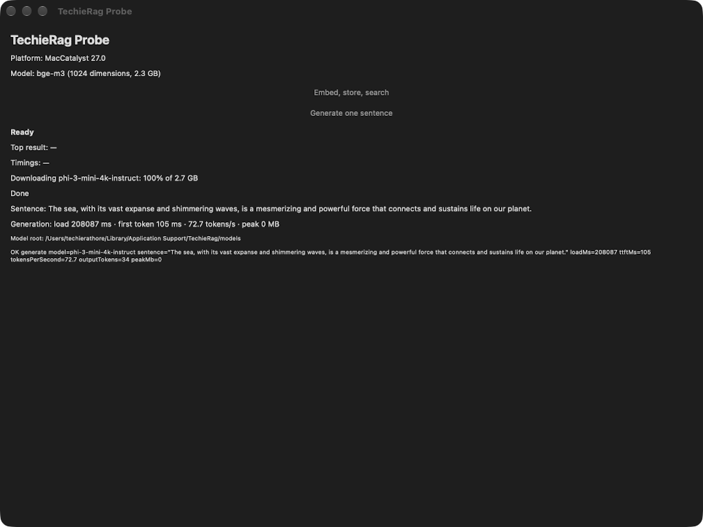
Tips. Before loading, TechieRag compares free memory with what the model needs and refuses politely with LocalModelMemoryException, naming the shortfall, rather than letting the system kill your app. A prompt longer than the model's window is refused up front too. Expect about 100 tokens a second for the phone model on a recent phone and 7 to 70 for Phi-3 mini on desktops.
Embed and search offline on phones and desktops#
The TechieRag.Embedded package turns text into vectors on the device, so search works without any embedding service.
- Add the package and build with
UseEmbedded().UseSqliteVec("app.db"). On Windows, macOS and Mac Catalyst you get bge-m3 (1024 dimensions, 2.3 GB, many languages); on Android and iOS you get all-MiniLM-L6-v2 (384 dimensions, 91 MB, English). - Before the first
InitializeAsync(), subscribe toModelDownloadService.Instance.DownloadSizeKnown. It fires once, with the bytes still to fetch, before the download starts. If the device is on mobile data, sete.Decline = trueand the call stops withModelDownloadDeclinedException; ask again later on Wi-Fi. - Subscribe to
ProgressChangedto show a bar: it reports bytes downloaded of the total. - Call
InitializeAsync(), thenEmbedAsync("hello")to confirm a vector comes back. Ingest andSearchAsyncas usual. - Turn the network off and initialise again: no request goes out, because the files are on disk.
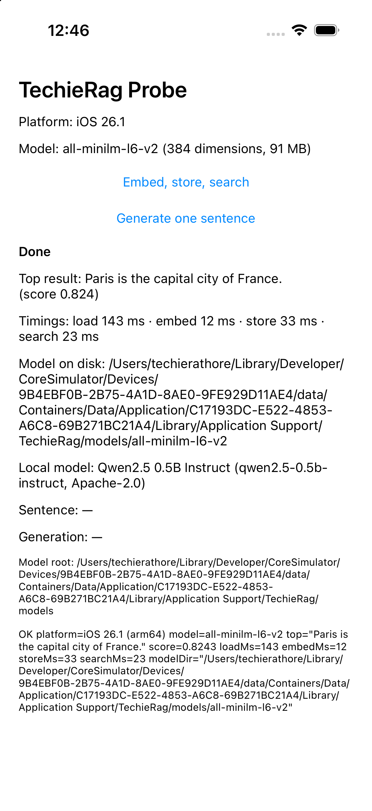
Tips. Models live in the app's own data area on every platform (never in the user's Documents); move them with UseModelRoot(path) before the first load. A download interrupted half way resumes from where it stopped on the next initialise. Asking for bge-m3 on a phone is refused, naming the 2.3 GB it would cost. Vectors from the two models are not comparable, so a store built with one model is re-embedded if you switch.
Sign in with a ChatGPT subscription instead of an API key#
If your users already pay for ChatGPT, they can use that plan with your app. Your app opens the browser and shows a short code; the user approves, and calls are billed to their subscription.
- Check the subscription can be used this way: in ChatGPT, under Settings and Security, device-code sign-in must be on. Business and Enterprise accounts need their admin's consent.
- Build with
UseChatGptSubscriptionLlm((prompt, ct) => { OpenBrowser(prompt.VerificationUri); ShowCode(prompt.UserCode); return Task.CompletedTask; }). Your app opens the browser and displays the code; TechieRag never opens anything itself. - Call
AskAsync("What does TechieRag do?"). The callback fires with the sign-in page and a one-time code. The user types the code in the browser and approves. The answer then arrives as normal. - To avoid asking every launch, pass
new ChatGptSubscriptionOptions { SessionStore = mySecureStore }so the session is kept somewhere safe on the device. On restart nothing is asked. - Pick a model with
ChatGptSubscriptionOptions.Model, or route by name withchatgpt-subscription/<model>.
Tips. Only ChatGPT permits this today. The catalogue lists six subscription vendors (ChatGPT, Claude, Gemini, Grok, Groq and Meta) with each vendor's terms and the date they were checked; asking for a vendor that forbids it, for example a Claude subscription, fails immediately with SubscriptionNotPermitted and the vendor's own wording. Keep the session store encrypted; it holds a credential.
Watch usage and set a budget#
Every call to a language model costs tokens, and paid providers charge for them. TechieRag counts them for you and can warn before a bill grows.
- Add
WithUsageTracking(u => u.MaxCostUsd = 0.10m)to the builder, choosing the ceiling you are comfortable with for a session. - Ask a few questions, or run an agent loop. Each answer carries its own usage: input tokens, output tokens and an estimated cost for the model that served it.
- Call
rag.GetTokenTracker().GetBudgetStatus()whenever you like. It returns tokens used so far, cost so far, the ceiling, and how close you are to it. Show it on a dashboard or a status bar. - As the total nears the ceiling an alert fires; handle it by warning the user, switching to a cheaper model, or stopping.
- To see the same numbers in your monitoring stack, add the
TechieRag.Telemetrypackage and callservices.AddTechieRagTelemetry(o => { o.EnableTracing = true; o.Endpoint = "http://localhost:4318"; }). Traces and counters flow to any collector that accepts the standard format.
Tips. Local models and self-hosted servers cost nothing, so their usage shows tokens with a zero price. Streaming agent runs report usage summed over every step, not just the last answer. Reset the session counter when a new user signs in so one person's questions do not count against another's budget.
Try it on your own devices with the probe app#
The probe is a tiny sample app with four heads: Windows, Mac Catalyst, Android and iOS. One screen proves the packages work on the hardware in your hand.
- Build and start the head you want. The screen shows the platform, the embedding model chosen for it, and where models are stored.
- Press Embed, store, search. The first press downloads the embedding model (2.3 GB on a desktop, 91 MB on a phone), so use Wi-Fi. It embeds three sentences, stores them, searches "What is the capital of France?" and shows the winner.
- A pass reads Done with the top result "Paris is the capital city of France." and four timings: load, embed, store and search. Press again for warm timings without the download.
- Press Generate one sentence. Accept the licence in the dialog; the local model downloads once (333 MB on a phone, 2.7 GB on a desktop), writes a sentence about the sea and shows load time, time to first token, tokens per second and peak memory.
- The result line at the bottom is also written to the console and to a text file in the app's data folder.
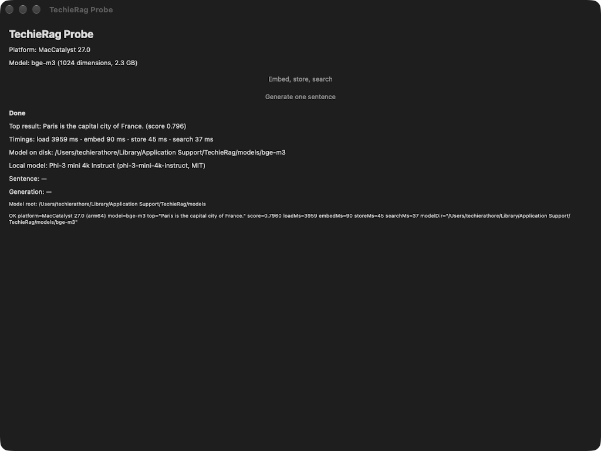
Tips. A Galaxy S23 answered at about 112 tokens a second on the phone model; an M4 Mac reached about 70 on Phi-3 mini. The iPhone needs one-time Apple steps (an Apple ID in Xcode, Developer Mode, a signing profile) described in the iPhone setup guide; the simulator needs none.
Troubleshooting#
- The first call takes minutes and shows no answer. A model is downloading: 2.3 GB for desktop embeddings, 91 MB on a phone, 333 MB or 2.7 GB for the local language model. Subscribe to the download events to show progress; the second call is fast.
- A phone refuses the big embedding model. bge-m3 is 2.3 GB and is only offered on Windows and Mac. Phones get all-MiniLM-L6-v2; asking for the big one on a phone fails on purpose with a message naming the size.
- The local model will not load and mentions memory. TechieRag measured free memory and found less than the model needs. Close other apps, or choose the smaller Qwen2.5 0.5B model; your app keeps running either way.
- Nothing downloads and the message mentions terms. Nobody accepted the model's licence. Provide the terms dialog or set the terms as accepted in your options.
- A download stopped half way. Start again; it resumes from the partial file rather than from zero. A file whose fingerprint does not match is fetched again.
- On an Intel Mac the local model reports the platform is not supported. The on-device engine ships no Intel Mac build. Use an Apple Silicon Mac, or point the app at a server model instead.
- Off Wi-Fi the download was declined and now nothing works. Your own handler set the decline flag. Ask again once on Wi-Fi; the size event fires each time until the files are present.
- Subscription sign-in fails with "not permitted". Only ChatGPT allows subscription use through an app; Claude, Gemini, Grok, Groq and Meta forbid it in their terms, and the error carries the vendor's wording. Use an API key for those.
- The browser code page never appears. Your callback must open the browser and show the code itself; TechieRag only hands you the address and the code. Also check device-code sign-in is on in the ChatGPT security settings.
- A connector run stopped early. It reached a limit you set (bytes, items or pages). The result carries a limit code and the sync state is kept, so the next run continues where it stopped.
- Search is slow on a very large store. SQLite search is an exact scan: about a quarter of a second at 50,000 chunks on a desktop. Past a few hundred thousand chunks move to pgvector or Qdrant.
- Tool calls misbehave on Ollama or Gemini over several turns. Those two servers receive tool results in a slightly different shape and usually tolerate it; if a multi-turn tool chat fails there, try another provider for that feature.
- Citation numbers restart at [S1] after restoring a session. Reference numbering lives in memory with the agent session; a reloaded session starts fresh. Keep the sources you already displayed.
- The Android store rejects the app on Android 15 or newer. One of the local engine's libraries is not yet aligned for 16 KB pages; a store release waits on the engine's fix. Sideloaded and test builds run normally.
- The iPhone build will not sign. The one-time Apple steps have not been done; follow the iPhone setup guide, then build again.
- Models landed somewhere you did not expect. Every model goes to the app's own data area, never the user's Documents. Set the model root before the first load if you want them elsewhere, and set it once, in the same place, every launch.
- The typed answer does not parse. Small local models sometimes wrap JSON in prose. Ask for the fields by name in the prompt, keep the type small, and retry once before giving up.
- Two providers give different answers to the same tool call. Each model reads the tool description its own way. Tighten the description and the argument names until every provider you support picks the tool you meant.